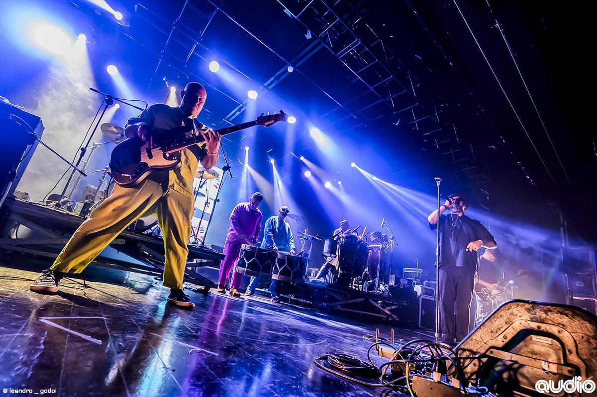

EDIÇÃO ESPECIAL • MANGUEBEAT
DO MANGUE
PARA O MUNDO!
O som de Recife que misturou tradição, distorção e resistência.
Mais do que música, a Nação Zumbi representa uma revolução sonora que atravessou fronteiras sem abandonar suas raízes pernambucanas.

DO MANGUE PARA O MUNDO.
A Nação Zumbi surgiu em Recife, Pernambuco, no início dos anos 1990, ligada ao movimento manguebeat, que misturava ritmos tradicionais nordestinos com rock, hip-hop e música eletrônica. Ao lado de Chico Science, o grupo ajudou a renovar a música brasileira e chamou atenção para a cultura e os problemas sociais da região.
Em 1994, o álbum Da Lama ao Caos marcou essa trajetória com músicas como A Praieira. Em 1996, a banda lançou Afrociberdelia, aprofundando sua mistura de ritmos e experimentações. Após a morte de Chico Science, em 1997, os músicos decidiram continuar o trabalho com o nome Nação Zumbi, mantendo a identidade do grupo e explorando novos caminhos sonoros nos discos seguintes.
CULTURA PERNAMBUCANA • MÚSICA • RESISTÊNCIA
QUEM FAZ O BARULHO
OS INTEGRANTES.
A Nação Zumbi reúne músicos com diferentes influências, misturando guitarra, bateria, baixo e percussões ligadas aos ritmos pernambucanos.
- Jorge Du Peixe - Vocal
- Alexandre Dengue - Baixo
- Toca Ogan - Percussão e voz
- Marcos Matias - Tambores e percussão
- Gustavo Da Lua - Tambores e percussão
- Tom Rocha - Bateria
- Neilton Carvalho - Guitarra